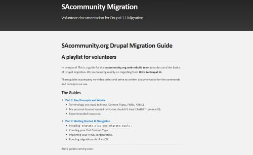
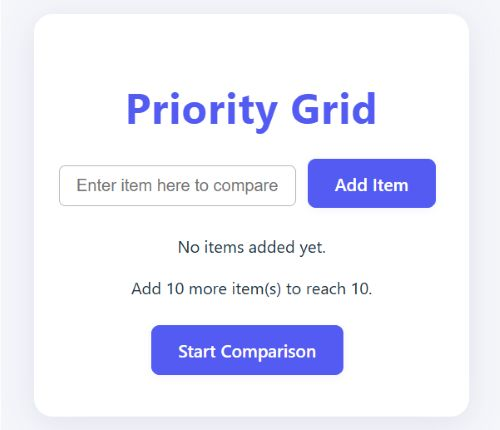

Profile
A unique combination of computer science and medical expertise, with a strong passion for healthcare technology. I specialize in AI-driven solutions, backend development, and software engineering, eager to apply my knowledge to meaningful projects that bridge technology and healthcare.
Projects

SACommunity Chatbot Project
Key Skills: Python, LangChain, Flask, Docker, Agile Software Development
Developed an AI-powered chatbot which uses Large Language Model and semantic search to enhance the search functionality of a not-for-profit organization's database (14,000+ records). Utilized LangChain to implement a Retrieval-Augmented Generation (RAG) chatbot, providing accurate and context-aware search results.
Project Report GitHub Repository
Drupal Migration Guides Blog
Key Skills: Drupal 11, PHP, MySQL, Technical Writing, Web Development
A series of technical blog posts documenting my experience and lessons learned while contributing to the Drupal 11 migration of SAcommunity.org, a not-for-profit organisation website. The guides mainly the site migration strategies. I used Jekyll to create a static website to host the blog.
Explore Drupal Migration Guides
LeetCode Diary
Key Skills: Python, Algorithms, Data Structures, Object-Oriented Programming
A personal diary where I document my learning journey while solving LeetCode problems. This helps me improve my coding skills, deepen my understanding of key concepts, and track my progress. The diary is a work in progress, and I will continue adding content as I practice and learn more.
Explore LeetCode Diary Watch on YouTube
Priority Matrix Project
Key Skills: React, JavaScript, GitHub Copilot, UI/UX Design
Inspired by the book What Color Is Your Parachute? by Richard Nelson Bolles, this project is a web-based priority matrix tool that helps users to add, compare and rank 10 items. I leveraged GitHub Copilot to assist in writing React code.
Future Plans: Expand the comparison feature to support more items and visualize results as a "petal" and eventually a "flower" diagram, as described in the book.
GitHub Repository Live DemoWork Experience
Research Assistant
Corcillum
Oct 2025 - Present
Assisting company in annotating angiogram images leveraging my medical background to ensure accurate and reliable data for machine learning model training.
Key Skills: Medical Image Annotation, Data Quality Assurance, Team Collaboration
Key Achievements:
- Annotating coronary angiogram images with high accuracy, leveraging my medical training to ensure clinically reliable labels for AI model development.
- Providing structured feedback on the performance, usability, and workflow of the annotation software, acting as a tester to help improve tool efficiency and user experience.
- Developing clear and practical annotation guidelines to support new annotators, based on best practices refined through my own high-quality and consistent annotation work.
Data Science Intern
IOC-UNESCO – Ocean Decade Programme (Paris, France) (Remote)
June 2025 - September 2025
Selected for a competitive internship to support data management and analysis for the UN Ocean Decade programme. Main responsibilities included cleaning and standardising historical datasets. Designed and built a relational database to support in development of the searchable database.
Key Skills: Python, Data Cleaning, Natural Language Processing, Relational Database Design, Data Visualisation, Remote Collaboration
Key Achievements:
- Cleaned and standardised all datasets collected by the UN Ocean Decade programme over the past five years to improve data quality and usability.
- Designed an interactive data schema and built a relational database to support long-term data management and analysis.
- Documented the full database structure to ensure clarity, maintainability, and smooth handover for future developers.
- Reviewed the technical requirements for an upcoming full-stack platform where the database will be integrated.
- Collaborated with the Decade Operations Team to refine processes for clean and consistent data intake.
- Coordinated updates with the broader Ocean Decade Team to ensure newly received data was captured, validated, and aligned with the database design.
- Recognised for outstanding performance, strong accountability, and exceptional work ethic throughout the assignment.
Volunteer – Website Rebuild Team
Connecting Up, Infoxchange, Adelaide, South Australia
Jan 2025 – Present
Contributing to the rebuild of SAcommunity.org, a not-for-profit organisation website, as part of a cross-functional team using Drupal 11.
Key Skills: Drupal 11, PHP, MySQL, Agile Software Development, Team Collaboration
Key Achievements:
- Redeveloped the SAcommunity.org website to improve functionality, performance, and user experience using Drupal, MySQL, and Docker.
- Gathered and analysed requirements in collaboration with the SAcommunity.org Directory Manager and Connecting Up leadership to guide redevelopment priorities.
- Created detailed, step-by-step onboarding guides in GitHub to streamline volunteer onboarding and foster efficient collaboration.
- Set up and maintained a GitHub Project Kanban board, coordinating task allocation to ensure clarity and productive contribution across the volunteer team.
- Leveraged LLMs (Gemini) to transform unstructured data into structured formats for integration into the new website database.
- Led the transformation and loading stages of the ETL process by developing Python scripts for data cleansing and restructuring, and authoring Drupal Migration YAML for seamless data import.
- Explored opportunities to integrate an AI-powered chatbot (based on a previous project) to enhance user engagement once the new site was ready for deployment.
Software Engineering Intern
YourAnswer International Pty Ltd, Adelaide
July to October 2024
Developed automated evaluation software to compare the semantic search performance of different embedding models, chunking methods, and vector stores. Conducted extensive research and provided detailed technical documentation to facilitate future experimentation.
Key Skills: Python, Bash (Linux), AI/ML (Embeddings, Vector Search), Docker, OpenSearch
Key Achievements:
- Developed a Python-based testing framework, automated via shell scripts to streamline semantic search evaluation, significantly reduced manual testing time.
- Conducted extensive experimentation and benchmarking with top-ranked embedding models from the MTEB leaderboard on Hugging Face.
- Benchmarked and optimized semantic search performance across multiple vector stores, including OpenSearch.
- Resolved a critical semantic ranking bug, identifying that the system used cosine distance instead of similarity scoring, which significantly improved search accuracy and result relevance.
- Documented experimentation results and written comprehensive technical reports to ensure effective knowledge transfer.
Industry Project Intern
Connecting Up, Infoxchange, Adelaide
March to June 2024
Led backend development for a full-stack AI-powered chatbot as part of a four-member team for SAcommunity.org, a community directory website.
Key Skills: Python, LangChain, Flask, Docker, Agile Software Development
Key Achievements:
- Led backend development, successfully integrating the LangChain library to enable LLM-based tool calls and semantic search, resulting in an Agentic RAG (Retrieval-Augmented Generation) chatbot capable of handling vague human queries with high accuracy.
- Optimized chatbot performance by applying advanced prompt engineering and retrieval strategies to improve response relevance.
- Deployed the chatbot using Docker, resolving compatibility issues within an outdated software environment and ensuring smooth operation.
- Worked closely with frontend developers and stakeholders to refine chatbot functionality for real-world use cases.
Research Assistant – Machine Learning in Cardiac Surgery
Australian Institute of Machine Learning (AIML), Adelaide
December 2023 to February 2024
Awarded AIML Summer Research Project Scholarship, applying a unique blend of medical and computing knowledge to advance AI applications in cardiology
Key Skills: Python, Data Analysis(Pandas, Matplotlib, Seaborn), Machine Learning(Scikit-Learn)
Key Achievements:
- Collaborated with healthcare experts and machine learning specialist to explore AI-driven decision-making solutions for medical applications.
- Processed and analyzed a large-scale healthcare dataset containing 6,000+ patient records, developing machine learning models to predict patient outcomes.
- Researched and reviewed AI-driven predictive analytics in healthcare, integrating insights into model design.
- Presented findings at the end of the internship to a panel of researchers.
Education
Master of Computing and Innovation
University of Adelaide, Australia, 2023 - 2024
GPA: 6.83/7
Courses completed: Computer Networks & Applications, Introduction to Statistical Machine Learning, Computer Systems, Operating Systems, Algorithm and Data Structure Algorithm Analysis, Software Engineering and Project, Project Management Fundamentals
Bachelor of Medicine, Bachelor of Surgery (MBBS)
University of Malaya, Malaysia, 2009 - 2014